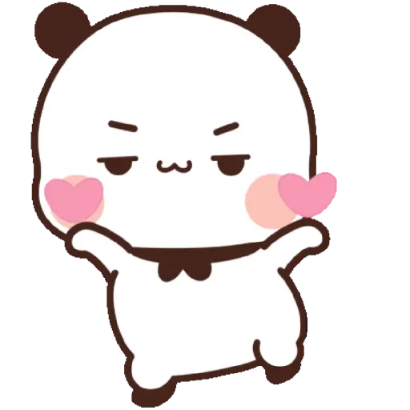
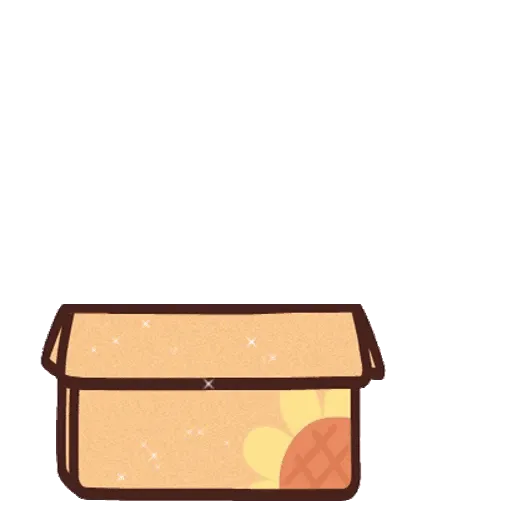
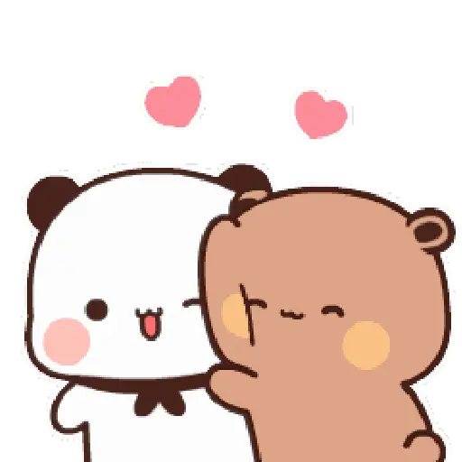

ayooo ayang tebak
passwordnya! 💗
kalau salah, kebangetan jir
>:O

♡♡♡♡
a guide for when we become 'us'
kalau salah, kebangetan jir
>:O
a guide for when we become 'us'



last one i made something
for u sayang, siap yaaa ..

i love you, now and always.
💗 tap play music <3
tau gaa sayang? aku selalu punya doa yang sama, entah itu setelah sholat wajib, sholat sunnah, atau di waktu-waktu ketika aku diam dan berbicara sama Allah tentang masa depan.
“ya Allah, kalau ada kesempatan karir yang lebih baik, jabatan yang lebih tinggi, rezeki yang lebih luas, dan gaji yang lebih besar, tolong berikanlah itu kepada cowokku. mudahkan langkahnya, bukakan pintu-pintu rezeki yang bahkan belum pernah dia bayangkan, dan jadikan setiap usahanya berbuah sesuatu yang baik.
aku ingin dia tumbuh, berhasil, dan hidup dengan tenang. aku memang perempuan yang ingin mandiri, ingin punya penghasilan sendiri, ingin berkarir dan menjadi seseorang yang bisa dibanggakan. tapi jujur, aku jauh lebih suka kalau kelak suamiku berada di atas aku dalam banyak hal, bukan supaya aku menjadi lebih kecil, melainkan supaya aku punya seseorang yang bisa aku hormati, aku banggakan, dan aku jadikan tempat pulang tanpa kehilangan diriku sendiri.
aku ingin tetap bekerja, tetap berkembang, tetap punya mimpi, tetapi dengan kehidupan yang tidak membuatku kehilangan waktu untuk keluargaku. aku ingin menjadi istri yang bisa pulang tepat waktu, menyambut suaminya, menemani anak-anaknya tumbuh, menikmati makan malam bersama, dan punya waktu untuk hal-hal kecil yang sering kali justru menjadi kebahagiaan terbesar.
i don't pray for your success just because i want us to live together sooner. i pray for you because i want to see you become the man you've always dreamed of becoming. i want you to have a life you're proud of, a career that makes you happy, and a heart that never feels tired of trying.
aku ingin kita cepat dipertemukan dalam kehidupan yang nyata, bukan hanya saling merindukan lewat layar atau chatan. aku ingin suatu hari nanti, semua doa yang pernah aku bisikkan diam-diam berubah menjadi kenyataan.
aku ingin melihat kamu pulang ke rumah yang sama denganku, menceritakan hari-harimu, lalu kita tertawa tentang hal-hal sederhana.
and if one day you become someone greater than you are today, please remember that i'll still be the same girl who prayed for you quietly, even before everything came true.
semoga Allah selalu menjaga kamu, melapangkan rezekimu, meninggikan derajatmu dengan cara yang baik, menjauhkanmu dari hal-hal yang buruk, dan menjadikan aku seseorang yang bisa menemani keberhasilanmu tanpa menjadi beban dalam perjalananmu.
aku tidak hanya ingin menjadi perempuan yang kamu cintai hari ini. aku ingin menjadi seseorang yang tetap kamu pilih ketika hidupmu sudah jauh lebih baik, ketika tanggung jawabmu semakin besar, dan ketika dunia mulai mengenal namamu.
because my dream isn't just to marry you. my dream is to build a peaceful life with you, to grow beside you, to see you succeed, and to love you in every season of your life.
semoga kelak kita tidak hanya menjadi dua orang yang berhasil meraih mimpi masing-masing, tetapi juga dua orang yang berhasil menjaga rumah tangga, menjaga hati, dan menjaga cinta yang Allah titipkan di antara kita.
and ya Allah, jangan biarkan dia merasa sendirian dalam mengejar apa yang dia cita-citakan. ketika langkahnya terasa berat, kuatkan hatinya. ketika dia merasa tertinggal dari orang lain, ingatkan bahwa setiap orang punya waktunya masing-masing.
ketika dia gagal, jangan biarkan kegagalan itu membuatnya meragukan dirinya sendiri. dan ketika dia berhasil, semoga keberhasilan itu tidak menjauhkan dia dari-Mu, tidak mengubah hatinya, dan tidak membuat dia lupa bagaimana dia memulai semuanya.
i hope you give him more than just success. give him peace, good health, a sincere heart, and people who genuinely love him. let him win without losing himself, let him grow without becoming cold, and let him have everything he deserves without having to sacrifice his happiness.
kalau memang aku adalah perempuan yang akan menemani seluruh perjalanan hidupnya, izinkan aku menjadi tempat paling tenang untuknya. bukan seseorang yang menambah beban pikirannya, melainkan seseorang yang bisa dia datangi ketika dunia terasa terlalu berat.
aku ingin menjadi rumah baginya, sebagaimana aku juga berharap dia menjadi rumah untukku. aku tidak ingin hanya menikmati hasil dari kerja kerasmu, aku juga ingin menemani prosesnya.
saat kamu belum punya apa-apa, saat kamu sedang membangun semuanya dari awal, saat kamu lelah, saat kamu ragu, bahkan saat jalan kita belum semudah yang kita bayangkan.
aku ingin kita saling menguatkan, bukan saling menuntut untuk selalu baik-baik saja.
an ya Allah, izinkan dia membahagiakan orangtuanya dengan hasil dari kerja kerasnya sendiri. izinkan dia melihat senyum dan kebanggaan di wajah orangtuanya, mendengar mereka berkata bahwa mereka bangga memiliki anak seperti dirinya.
cukupkan rezekinya agar dia bisa membalas kebaikan orangtuanya, memberikan kehidupan yang lebih nyaman, dan membuat mereka merasakan bahwa segala pengorbanan yang pernah dilakukan tidak sia-sia.
aku ingin dia punya waktu untuk membahagiakan orangtuanya, mencapai apa yang dia impikan, membangun masa depannya, dan mempersiapkan dirinya dengan baik.
jangan biarkan dia terburu-buru mengambil tanggung jawab besar hanya karena ingin segera bersamaku. aku ingin ketika kelak dia memilih menjadi seorang suami, dia melangkah dengan hati yang siap, bukan dengan perasaan terpaksa atau terbebani.
aku ingin dia merasa bahwa dia sudah cukup siap untuk memulai kehidupan baru, tanpa harus merasa meninggalkan tanggung jawab dan kebahagiaan orangtuanya.
i don't want you to rush into becoming a husband just because you want to be with me. i want you to fulfill your dreams, make your parents proud, and become the man you wish to be.
and when the time comes for us, i hope you'll come to me with a peaceful heart, knowing that you've done your best for yourself and for the people you love.
and when the time comes for us to finally live under the same roof, i hope we won't forget all the nights we spent praying for this moment.
i hope we still appreciate the simplest things, a meal together, your hand in mine, your voice after a long day, and the feeling of finally having nowhere else to go because we have each other.
aku ingin suatu hari nanti, ketika kita sudah tua dan rambut kita mulai memutih, aku bisa melihat kamu dan berkata, “ternyata laki-laki yang dulu selalu aku sebut dalam doaku benar-benar menjadi teman hidupku.”
semoga bukan hanya aku yang beruntung mendapatkanmu, tetapi kamu juga selalu merasa beruntung mendapatkan aku.
semoga kita menjadi pasangan yang tidak hanya saling mencintai, tetapi juga saling menghargai, saling menjaga, saling mengusahakan, dan selalu memilih pulang kepada satu sama lain.
i don't need a perfect life with you. i just want a life where, no matter how difficult things get, we never stop being a team...

semoga kita selalu punya alasan
buat tetap memilih satu sama lain.
makasih ya udah jadi bagian
paling hangat di hidup aku.

jangan lupa senyum seterusnya yah sayang
aku akan selalu mencintaimu